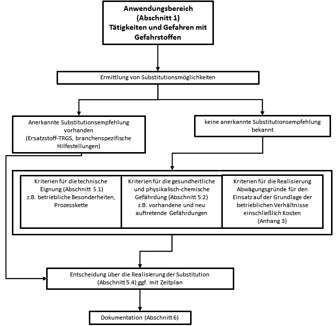

Abbildung 1: Ablaufschema Substitution
(1) In diesem Anhang wird an einem Beispiel gezeigt, wie die TRGS 600 auf eine konkrete Substitutionsprüfung angewendet werden kann. Das Beispiel erhebt nicht den Anspruch, alle denkbaren Möglichkeiten abgeprüft zu haben oder die Auswahl und Gewichtung der Beurteilungskriterien vollständig zu beschreiben.
(2) Reinigungs- und Entfettungsarbeiten an Anlagenteilen wie z. B. Teilen von Maschinen oder Fahrzeugen fallen z. B. in Werkstätten wie Schlossereien oder Servicewerkstätten an. Häufig werden hierfür brennbare niedrigsiedende Lösemittel wie aromatenfreie Testbenzine z. B. in Spraydosen eingesetzt.
Ausgangsbasis: handwerklich strukturierte Werkstatt, 10 Beschäftigte, leichtflüchtiges Reinigungsmittel in Spraydosen, durchschnittlich ca. 5 Druckgaspackungen á 400 ml pro Schicht, Nachreinigung/Abwischen mit Putzlappen
Tabelle 1: Übersicht Gefährdungsbeurteilung bestehendes Beispiel
| gesundheitliche Gefährdung Freisetzung von Lösemitteln in die Luft am Arbeitsplatz, Inhalative Belastung und Hautkontakt mit entfettenden Lösemitteln |
| Gefährdungen durch physikalisch-chemische Einwirkungen (hier: Brand- und Explosionsgefährdungen) Gefahr durch explosionsfähige Atmosphäre durch Lösemitteldämpfe Brandgefahr durch Putzlappen |
| Umwelt: Emission von Lösemitteln in die Umwelt |
| andere Gefährdungen: in diesem Beispiel nicht relevant |
| Entscheidung: Es besteht eine gesundheitliche Gefährdung und Brand- und Explosionsgefährdungen. Eine Substitutionslösung ist zu prüfen. |
(1) Es gibt keine anerkannte Substitutionsempfehlung (Ersatzstoff-TRGS, tätigkeits- oder branchenspezifische Lösung) nach Abschnitt 3 Absatz 2 Nummer 1 und 2 der TRGS 600.
(2) Als mögliche alternative Lösungen zum Ersatz leichtflüchtiger Reinigungsmittel kommen in Frage:
2.4.1 Kriterien für vorhandene und möglicherweise neu auftretende Gefährdungen beachten (Abschnitte 4 und 5.3 der TRGS 600)
(1) Hier können die Kriterien aus den Abschnitten 4 und 5.3 der TRGS 600 oder das Spaltenmodell in Anhang 2 zur TRGS ausgewählt und angewendet werden.
(2) Andere als stoffgebundene Gefährdungsfaktoren (z. B. Gefährdungen durch Lärm, Vibrationen) sind gemäß Arbeitsschutzgesetz mit zu betrachten.
(3) Die aussichtsreichen Lösungen sollen untersucht und die Ergebnisse dokumentiert werden.
Tabelle 2: Vergleich Gefährdungen bestehendes Beispiel mit Alternativen
| Gefährdungen | Gegenwärtige Lösung/Praxis | Alternative 1 | Alternative 2 |
| Bezeichnung (Stoff oder Verfahren ) |
Leichtflüchtige Reinigungsmittel | Geringflüchtige Reinigungsmittel | mobile Reinigungsanlage |
| Charakterisierung | Reiniger auf Kohlenwasserstoffbasis Flammpunkt < 23°C, Treibgas: Propan/Butan |
Reiniger auf Kohlenwasserstoffbasis, Flammpunkt > 60°C Pumpsprühflasche |
mobile Reinigungsanlage mit wässrigem Reinigungsmittel |
| Gesundheitliche Gefährdung durch inhalative und dermale Exposition | Inhalative Belastung durch Kohlenwasserstoff-Dämpfe und -Aerosole, Hautkontakt mit entfettenden Lösemitteln. | Geringere inhalative Belastung durch Kohlenwasserstoff-Dämpfe und -Aerosole als bei leichtflüchtigen Produkten, dermale Belastung (Entfettung) höher als bei leichtflüchtigen Produkten. | Es werden keine flüchtigen Gefahrstoffe eingesetzt. Geringer Hautkontakt. |
| Gefährdungen durch physikalisch-chemische Eigenschaften (hier: Brand- und Explosionsgefährdungen) |
Brand- und Explosionsgefährdung durch entzündbare Lösemittel und Treibgas | Brand- und Explosionsgefährdung durch entzündbare Lösemittel, geringer als bei Flammpunkt < 23°C. Brandgefahr durch Putzlappen und Lösemittelrückstände |
Keine |
| Umweltgefährdung | Emission von Lösemitteln in die Umwelt | Aufgrund des geringeren Dampfdrucks (bzw. höheren Siedepunkts) geringere Emission von Lösemitteln in die Umwelt. Auffangbehälter und Entsorgung notwendig | Auffangbehälter und Entsorgung notwendig |
| andere Gefährdungen: (nicht Gegenstand der GefStoffV, aber betrieblich relevant) |
Nicht relevant | Nicht relevant | Nicht relevant |
| Entscheidung | Hohe Gefährdung durch Dämpfe und Aerosole leichtflüchtiger Kohlenwasserstoffe | Geringere Gefährdung durch Kohlenwasserstoffe als bei gegenwärtiger Lösung | keine Gefährdungen durch flüchtige Gefahrstoffe zu erwarten |
Die Alternativen sind nach den relevanten Kriterien, z. B. technische Anforderungen und die Eignung in der Prozesskette, zu beurteilen und die Ergebnisse zu dokumentieren.
Tabelle 3: Vergleich technische Eignung bestehendes Beispiel mit Alternativen
| Technische Beurteilung | Gegenwärtige Lösung/Praxis | Alternative 1 | Alternative 2 |
| Bezeichnung | Leichtflüchtige Reinigungsmittel | Geringflüchtige Reinigungsmittel | mobile Reinigungsanlage |
| Technische Anforderung: Bauteile sauber und trocken |
Ja | Ja, aber längere Trocknungszeit als bei leichtflüchtigen Reinigungsmitteln | Ja, aber längere Trocknungszeit als bei leichtflüchtigen Reinigungsmitteln |
| Eignung in der Prozesskette hier insbesondere: Herstellervorgaben für Reinigung von Bauteilen |
Gegeben | Gegeben | Gegeben |
| In den vorhandenen Räumen realisierbar? | Ja, aber Explosionsschutz beachten | Ja, aber Auffangwanne notwendig | Ja, aber Auffangwanne notwendig |
| Entscheidung | Technisch geeignet, aber Explosionsschutz beachten | Technisch geeignet | Technisch geeignet |
2.4.3 Kriterien für die Realisierung der Substitution (Abschnitt 5.4 und Anhang 3 der TRGS 600)
Es wird qualitativ dokumentiert, ob sich die Substitutionslösung sehr positiv (++), positiv (+), negativ (-), sehr negativ (--) oder neutral (0) auswirkt.
Tabelle 4: Vergleich der Substitutionslösungen für leichtentzündliche Reinigungsmittel
| Einflussfaktoren | Änderung durch die Substitutionslösung | |
++/+/0/-/-- |
++/+/0/-/-- |
|
| Alternative 2: mobile Reinigungsanlage |
Alternative 1: Geringflüchtige Reinigungsmittel |
|
| Materialkosten | + | 0 |
| Anlagekosten – Investitionskosten – Energiekosten |
-- 0 |
- 0 |
| Arbeitskosten | - | 0 |
| Technische Schutzmaßnahmen – Lüftungsmaßnahmen – Brand/Ex-Schutz |
+ + |
+ + |
| Persönliche Schutzmaßnahmen | + | + |
| Arbeitsmedizinische Vorsorge | 0 | 0 |
| Transportkosten – Frachttarife, Verpackung… |
0 | 0 |
| Lagerkosten | 0 | 0 |
| Entsorgungskosten – Recycling, Abwasser, Abluft |
0 | 0 |
| Kosten für Organisation | 0 | 0 |
| Versicherungskosten | 0 | 0 |
| Verringerung der Gefährdung (nicht in Kosten zu beschreiben) |
++ |
+ |
| Weitere Einflussfaktoren (nicht in Kosten zu beschreibende betriebsbezogene Faktoren) – Firmenimage |
+ |
+ |
| – Mitarbeiterzufriedenheit | 0 | 0 |
| – Zukunftsfähigkeit/ Planungssicherheit | + | 0 |
| Abschließende Bewertung: Die Alternative 2 ist aufgrund der stärkeren Verringerung der Gefährdung (kein Einsatz von flüchtigen Gefahrstoffen) zu bevorzugen. |
||